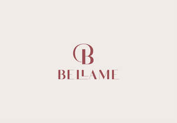

Trade Mark Journal No.2025/034 22 August 2025
UK00004246620 8 August 2025 (24)

- Class 24
- Woven fabrics; Woven silk fabrics; Woven fabrics imitating leather; Elastic woven fabrics; Woven fabrics for cushions; Woven linen fabrics; Piece goods made of woven plastic material; Woven fabrics for furniture; Narrow woven fabrics; Woven fabrics for sofas; Woven furnishing fabrics; Woven fabrics for armchairs; Woven felt; Coated woven textile materials; Woven cloth with breathable polyurethane coating sold in the piece; Mesh-woven fabrics; Fabrics woven from ceramic fibres, other than for insulation; Knitted fabrics of chemical-fiber yarn; Broad woven industrial fabrics; Cotton knitted fabric; Plastic woven textile materials for use in agriculture; Fabrics being textile piece goods for use in tapestry; Knitted fabric; Textile piece goods made of cotton; Hemp-silk mixed fabrics; Fabrics [textile piece goods] made of carbon fibre; Woolen fabric; Textile printers' blankets; Hemp-wool mixed fabrics; Covered rubber yarn fabrics [for textile use]; Woven fabrics for making up into articles of clothing; Woven cloth with breathable polyurethane coating; Fabrics being textile piece goods for use in patchwork; Woven fabrics imitating animal skin; Breathable piece goods made of textile materials bonded with rubber; Cloths of woven textile material for washing the body [other than for medical use]; Knitted fabrics of cotton yarn; Rubber covered yarn fabrics; Jute fabric; Cotton fabric; Nylon fabric; Fitted toilet lid covers [made of fabric or fabric substitutes]; Woollen fabric; Chenille fabric; Knitted fabrics of wool yarn; Chenile fabric; Textile piece goods for making cushion covers; Textile goods for making headshawls and yashmaghs; Textiles made of wool; Patterned textiles for use in embroidery; Piece goods made of textile materials bonded with rubbers; Woven cloth with breathable polyurethane coating for water proof garments; Wool loop knit fabrics; Hand spun silk fabrics; Textile fabric piece goods for the manufacture of upholstered furniture; Fabrics being textile piece goods made of mixtures of fibres; Elastic yarn mixed fabrics; Quilts made of terry cloth; Piece goods made of non-woven plastic material; Fabrics of man-made fibres being textile goods in piece form; Knitted fabrics; Woolen cloth; Textiles made of flannel; Fabrics made from synthetic yarns; Synthetic fiber fabric.
Bellame Ltd